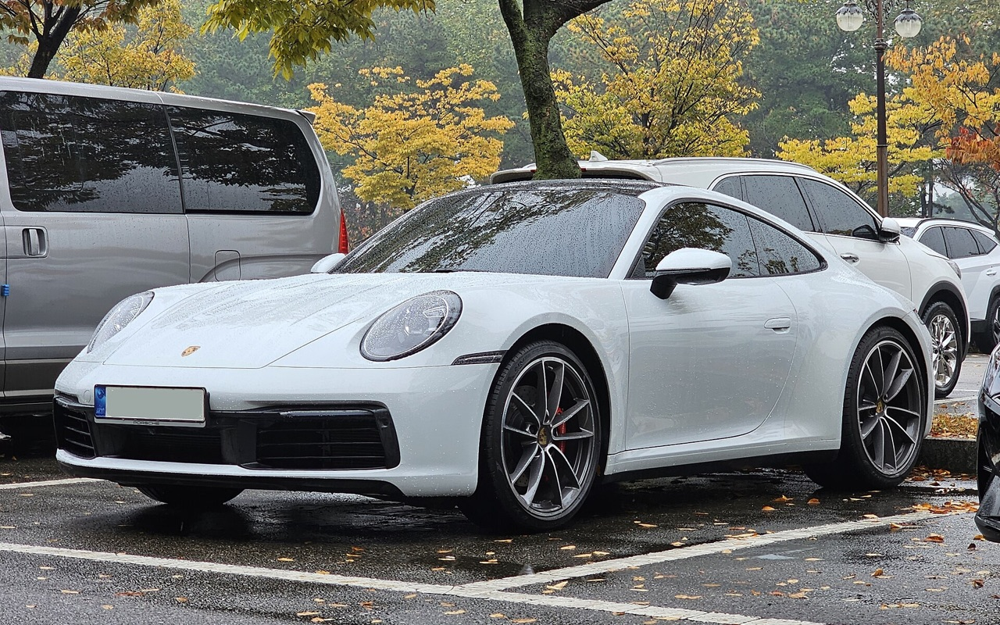
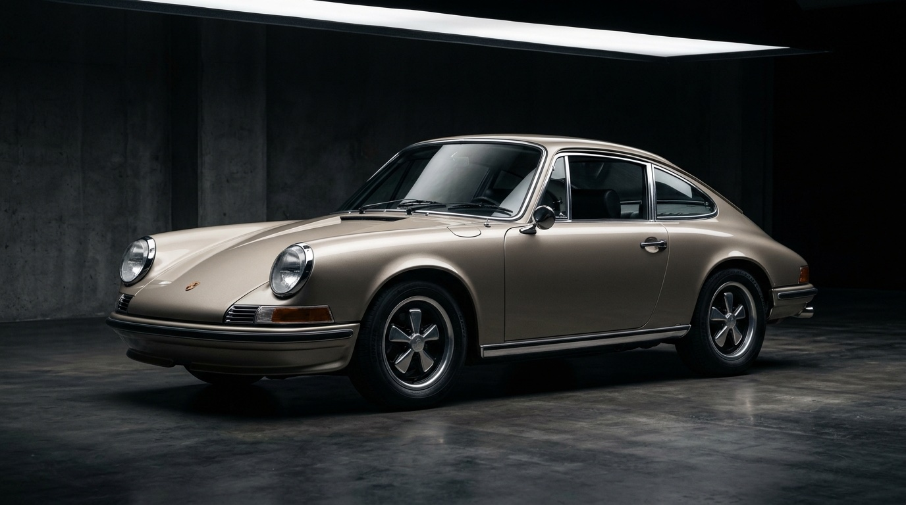
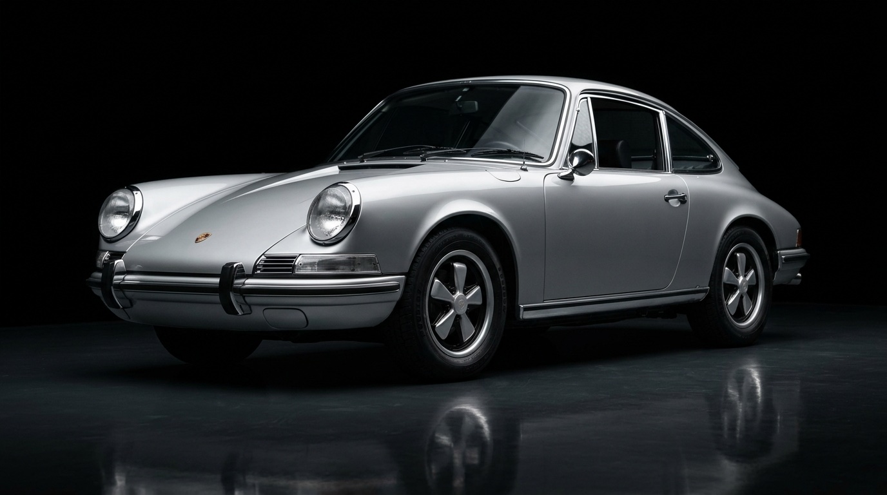
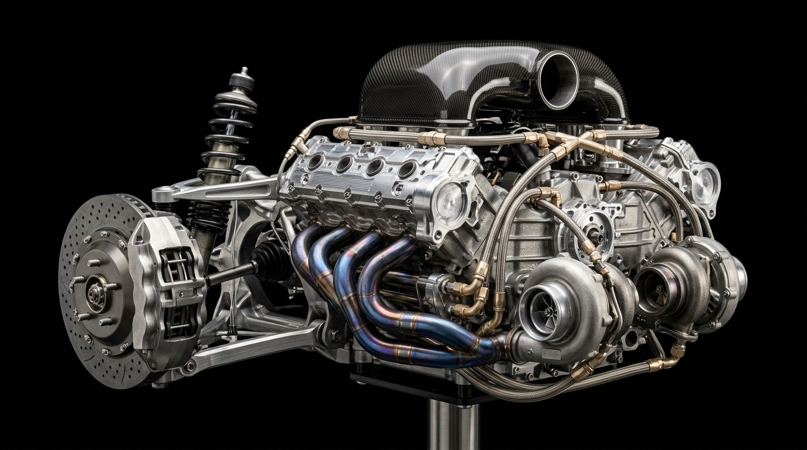

992.2 GENERATION
PURE SPORTS COUPÉ
911 Carrera
SIGNATURE ARCHITECTURE
1963 — PRESENT · ZUFFENHAUSEN
Born from a vision. Defined by generations. Built to remain unmatched.
For over six decades, the Porsche 911 has challenged convention, redefined performance, and proven that true icons never stand still.
01 — THE LEGACY
When the Type 901 made its debut at the 1963 Frankfurt International Motor Show, Ferdinand Alexander Porsche drew a roofline that refused ornament. Every curve followed air; every proportion served balance. Renamed 911 before production began in 1964, it established an architectural truth that Stuttgart has refined for more than sixty years.
While trends shifted and rivals reinvented themselves from scratch, the 911 evolved strictly from within. From air-cooled purity to water-cooled precision, twin-turbo authority, and electrified T-Hybrid responsiveness, the silhouette remains unmistakable—immediately recognizable at a glance, unmatched on road or circuit.

02 — THE GENERATIONS
Trace the continuous evolution of the Porsche 911 across eight defining generations—from 130 PS air-cooled beginnings to the modern 992 benchmark.

F-Model · The Founding Silhouette
03 — THE MODELS

PURE SPORTS COUPÉ
04 — ENGINEERING
Every 911 obeys a single engineering creed: turn unconventional geometry into unmatched mechanical clarity. Explore how powertrains, aerodynamics, and chassis tuning separate each model across the range.

05 — THE EXPERIENCE
Some cars are remembered. Some become legends. Across alpine switchbacks, wet tarmac, and the Nürburgring Nordschleife, the Porsche 911 remains the benchmark others measure themselves against.